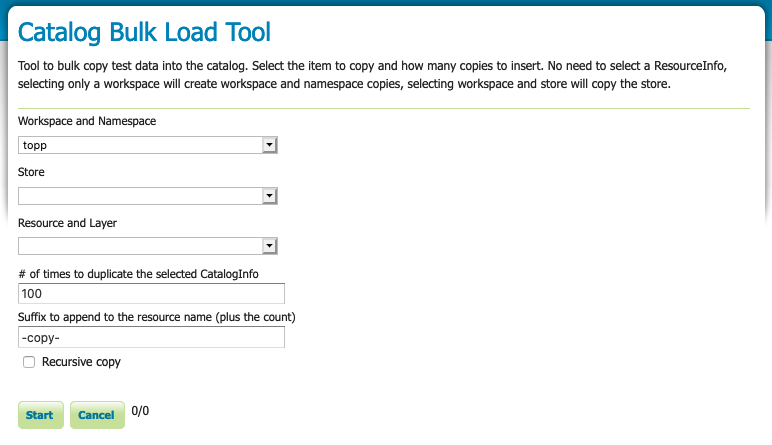

Bulk Load tool¶
The Catalog Bulk Load Tool is used to duplicate GeoServer configuration (workspaces, stores, layers) for testing. The tool can also be used to make a single duplicate for experimenting with configuration and optimization.

Catalog Bulk Load Tool¶
Duplicating Configuration¶
Navigate to
Select the item to copy:
Workspace and Namespace
Store
Resource and Layer
Fill in the # of times to duplicate.
Provide a Suffix to append
Choose to recursively copy:
Recursively copying a workspace will duplicate all stores and layers contained in the workspace
Recursively copying a store will copy all layers published by the store
Press Start to begin duplicating
Previous: Tools
Next: Resource Browser tool